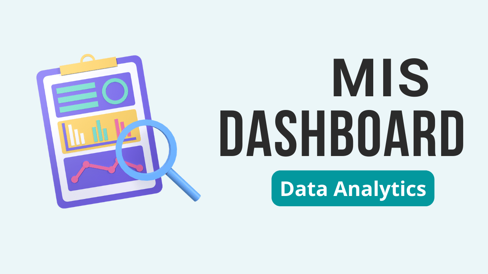

Explore a curated collection of data analytics projects highlighting impactful solutions across key domains. From bank analytics to HR analytics and MIS dashboards, these projects demonstrate the power of data-driven insights in addressing real-world challenges. Dive into advanced techniques like predictive modeling, data visualization, and dashboard creation to see how effective data analysis transforms decision-making and enhances business outcomes across industries.

The "Employee Retention - HR" dashboard analyzes workforce metrics, highlighting a 50.21% attrition rate among 50,000 employees. Average employee age is 39, with moderate job dissatisfaction (2.5/5). Attrition trends are consistent across departments, while higher income doesn't guarantee lower attrition. Work-life balance varies by role, with managers faring better. Strategies to improve retention are needed.
The "Bank Analytics" dashboard provides a comprehensive view of loan performance and customer behavior. It highlights a steady increase in loan disbursements from 2007 to 2011, with 2011 seeing the highest amount. Segmentation by grades, homeownership, and verification status reveals key patterns, while state-wise analysis emphasizes high loan activity in California and Texas.
.

The dashboard provides an overview of sales and revenue data segmented by zone, category, and payment methods across multiple years and months. It highlights the Central zone as the top contributor to sales, while Office Supplies lead in sales quantity. Revenue trends are detailed by quarters, shipping companies, and payment modes, showcasing dynamic sales performance across regions and categories.